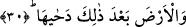
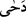

yırtıp ortaya çıkmıştır. Şu halde bu doğurulan kâinat, zamanın çocuklarıdır. Gündüzün
geceden çıkarılması, Havva’nın Âdem’den çıkarılması gibidir. Nitekim Allah şöyle
buyurur: “Gece de onlar için bir ibret alâmetidir. Biz ondan gündüzü sıyırıp çekeriz
de onlar karanlıklara gömülürler.” (Yâsin 36/37) Bir başka âyet-i kerime ise
şöyledir: “Çünkü Allah geceyi gündüze katar, gündüzü de geceye katar.” (Hac
22/61) Tıpkı Hz. İsa’yı Hz. Meryem’e, Hz. Havva’yı da Hz. Adem’e kattığı gibi. Allah
gündüzün çocuklarına hitap ettiği zaman “geceyi katar” buyurmakta; gecenin çocuklarına
hitap ettiğinde ise “gündüzü katar” buyurmaktadır.
Hakikat ehli birisi der ki: Gecenin ve gündüzün birbirini izlemesi, kötülükle iyiliğin
birbirini izleyeceğine işârettir. Nasıl ki dünya sâdece gece ve sâdece gündüz şeklinde
durmuyor, geceyle gündüz dünyada birbirini izliyorsa, işte mü’min de aynen böyledir. O
îmanın ve amel-i sâlihin nurundan uzak olmadığı gibi, bozuk amel ile geçersiz fikrin
karanlığından da uzak değildir. Bu nedenle Peygamber Efendimiz (s.a.) Hz. Ali’ye şöyle
demiştir: “Ya Ali! Herhangi bir kötülük işlediğinde onun yanısıra bir de iyilik yap.
Çünkü kıyamet günü geldiğinde Allah Teâlâ geceyi Cehenneme, gündüzü Cennete
atacaktır. Cennette gece olmayacaktır. Tıpkı Cehennemde gündüzün olmadığı gibi.
Yani Cennetteki gündüz, mü’minin îmanının nuru ile -mertebesine göre- sâlih
amellerinin nurudur. Cehennemdeki gece ise kâfirin küfrünün karanlığı ile kötü
amelinin karanlığıdır. Küfür nasıl ki îman olmazsa gece de aynı biçimde gündüz
olmaz. Ateş de nur olmaz.” [7] Şu halde nur ehli ile nar ehli kendilerindeki galip olan
sıfat ne ise o sıfat üzere kalacaklardır. Kalbe ve tecelliye göre kalbin durumuna gelince
kalp, kalıbın aksine olacaktır. Çünkü kalbin manevi gününe zaman zaman bir takım
örtme ve perdeleme ârız olsa da gündüzünü hiçbir zaman gece izlemeyecektir.
30. Bundan önce de yerküreyi döşedi.
Âyette geçen “ba’de zâlike” ifâdesine zâhirîne uyarak “bundan sonra” anlamı değil de
“bundan önce” anlamını verdik. Bu tıpkı Enbiyâ sûresinde geçen şu âyette olduğu
gibidir: “Andolsun zikirden (Kur’an’dan) önce Zebur’da da yeryüzüne iyi kullarım
vâris olacaktır diye yazmıştık.” (Enbiya 21/105) Bu âyette de aynı şekilde “min
ba’di’z-zikri” ifâdesi zâhirine bakılarak “Kur’andan sonra” şeklinde değil de, meâlde
belirtildiği gibi “Kur’andan önce” şeklinde tefsir olunmuştur.
Âyetteki “__WORD__/deha” fiili döşedi, dünyadakiler üzerinde yerleşsinler, bir köşesinden
diğer köşesine gidebilsinler diye beşik gibi yaydı, demektir.
Bazı âlimler yukarda geçen “ba’de” kelimesine, aslî anlamını dikkate alarak “sonra”
anlamını vermişlerdir. Bu yaklaşıma göre Allah gökten önce yeryüzünü yaratmıştır.
Ancak yeryüzünü henüz yayıp, döşememiştir. Sonra Allah semaya yönelmiş, onu yedi